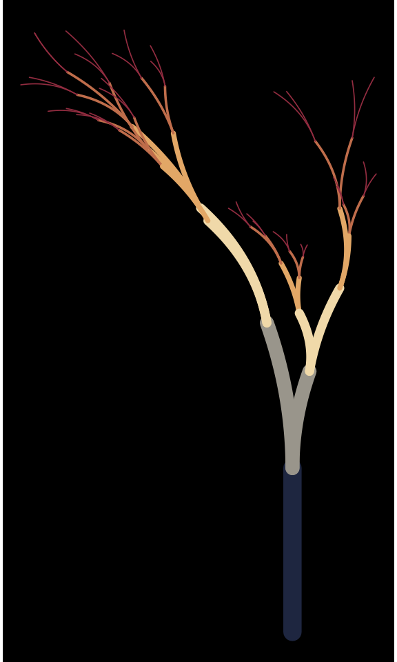
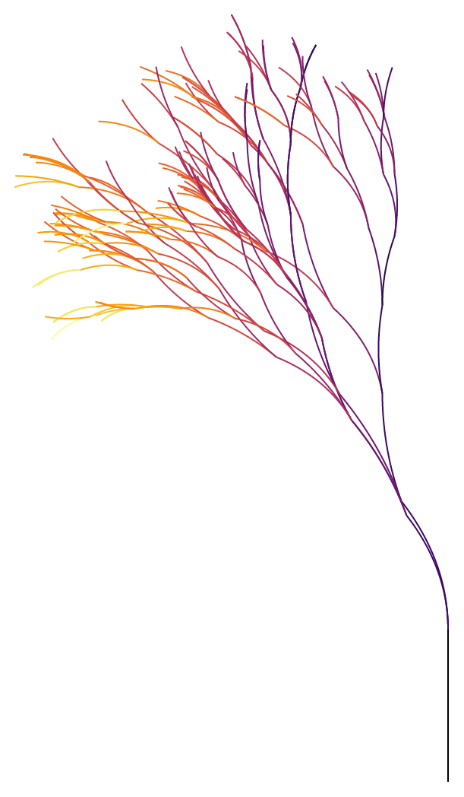

vignettes/FlameTree.Rmd
FlameTree.RmdLet’s add a flametree into Excalidraw.
The flametree package uses ggplot2 for drawing, so we can piggyback the aesthetic mapping and simply extract point coordinates and colours in the plot’s data.
library(minixcali)
library(flametree)
library(ggplot2)
dat <- flametree_grow(seed = 4, time = 5) # data structure
img <- flametree_plot(data = dat) # ggplot object
img
gb <- ggplot_build(img)
tr <- gb$data[[1]]
b <- split(tr, tr$group)
str(b, list.len = 3)## List of 63
## $ 1 :'data.frame': 100 obs. of 11 variables:
## ..$ colour : chr [1:100] "#1E2640" "#1E2640" "#1E2640" "#1E2640" ...
## ..$ size : num [1:100] 4.67 4.67 4.67 4.67 4.67 ...
## ..$ x : num [1:100] -0.43 -0.43 -0.43 -0.43 -0.43 ...
## .. [list output truncated]
## $ 2 :'data.frame': 100 obs. of 11 variables:
## ..$ colour : chr [1:100] "#E2A766" "#E2A766" "#1E2640" "#1E2640" ...
## ..$ size : num [1:100] 1.28 1.28 4.67 4.67 4.67 ...
## ..$ x : num [1:100] -0.389 -0.389 -0.389 -0.39 -0.39 ...
## .. [list output truncated]
## $ 3 :'data.frame': 100 obs. of 11 variables:
## ..$ colour : chr [1:100] "#E2A766" "#E2A766" "#1E2640" "#1E2640" ...
## ..$ size : num [1:100] 1.28 1.28 4.67 4.67 4.67 ...
## ..$ x : num [1:100] -0.992 -0.995 -0.998 -1.001 -1.005 ...
## .. [list output truncated]
## [list output truncated]From there it’s a relatively straight-forward process to add one branch at a time to the Excalidraw tree.
d <- Excali_doc()
library(scales)
scale <- 100
for (ii in seq_along(b)) {
s <- b[[ii]]
r_x <- range(s$x)
r_y <- range(s$y)
m <- scale * cbind(s$x - r_x[1],-s$y - r_y[1])
shape <- xkd_draw(
x = scale * r_x[1],
y = scale * r_y[1],
width = scale * diff(r_x),
height = scale * diff(r_y),
strokeWidth = 1,
roughness = 0L,
strokeSharpness = "round",
groupIds = list("levelplot", paste0('level-', ii)),
fillStyle = "solid",
strokeColor = s$colour[1],
backgroundColor = s$colour[1],
points = m)
d$add(shape)
}
d$export('tree.json')You can see this drawing at: https://excalidraw.com/#json=5730260331003904,U-jtojw6AHcRuH_lw2P4ng
(with time=7 the tree is more interesting but Excalidraw struggles and doesn’t offer a shareable link)
